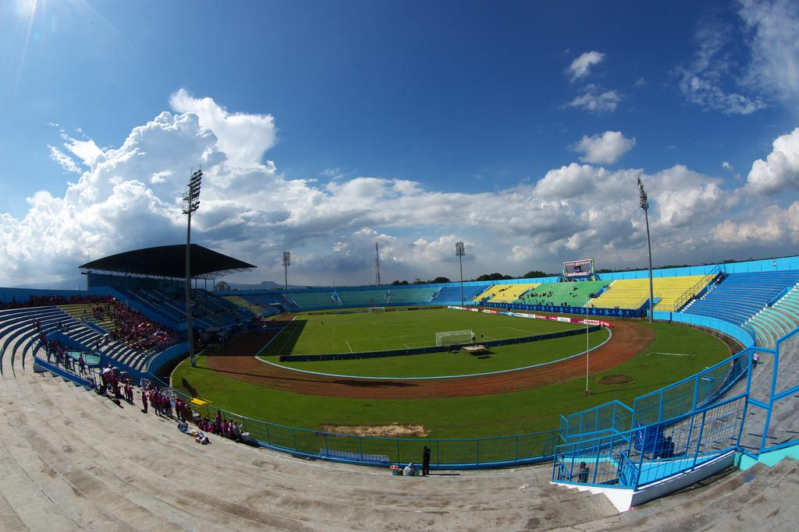

Kecintaan supoter pada klub sebak bola di indonesia sering kali menyebabkan munculnya rivalitas antara dua tim sepak bola. Baik pemain maupun penggemarnya. Salah satu rivalitas klub sepak bola di indonesia yang terkenal adalah antara Arema FC dan Persebaya Surabaya
Rivalitas dalam sepak bola tidak hanya terjadi di indonesia, hal tersebut juga sering terjadi di negara - negara maju lainya. Namun yang jadi perhatian dalam insiden tersebut adalah banyaknya jumlah korban yang berjatuhan. setidaknya ada 695 orang luka luka dan 135 orang meninggal dunia
Yang menyebabkan terjadianya peristiwa tersebut adalah marahnya suporter tuan rumah Arema Fc usai tim kebanggaanya di kalahkan persebaya surabaya dengan skor 2-3 di kandang mereka sendiri. Atas kekalahan tersebut suporter Arema Fc turun kelapagan.
Melihat hal tersebut polisi menembakan gas air mata ke tribun seletan dengan tujuan untuk melindungi para pemain dan meredahkan amukan suporter. Namun hal tersebut memicu kepanikan para suporter sehingga para suporter berlarian untuk menghindari gas air mata tersebut. terjadi penumpukan di pintu keluar menyebabkan sejumlah suporter mengalami asfiksia.
Atas kejadian tersebut menyebabkan ratusan penonton tewas, juga ada potensi trauma terhadap keluarga korban dan puluhan ribu penonton yang menyaksikan pertandingan tersebut. Tercatat terdapat 135 orang meninggal dunia, 302 orang mengalami luka ringan dan 21 orang menderita luka berat. Note data tersebut di ambil dari berapa sumber berbeda, sehingga bisa saja data yang kami sampaikan sedikit berbeda.
| DATA KESIMPULAN | |||
|---|---|---|---|
| Informasi Tempat Kerjadian | Stadion Kanjuruhan |  | |
| Kapasitas | 38.000 penonton | ||
| lokasi | Kabupaten Malang, Jawa Timur | ||
| didirikan pada | 1997 | ||
| Informasi Tragedi | |||
| Jumlah Korban | 794 | ||
| meninggal | 135 | ||
| luka luka | 695 | ||
Buku ini saya buat untung mengenang tragedi kanjuruhan, sebagai peristiwa besar dalam sepak bola melalui buku ini saya berharap agar tidak kejadian tersebut tidak terulang lagi